I implement deferred shading and SSAO in this project. I store position, normal, albedo, roughness and metalness in G-Buffer in the first pass. Then calculate screenspace ambient occlusion and its blur in the second and third pass. In the final render pass, I calculate the lighting by sampling from G-Buffer and apply ambient occlusion.
My Scene A3-create
I created a scene that consist of a disco ball with 5 spot lights of different colors, a standing microphone, a guitar and a drum set.
Here's the ssao of the scene.
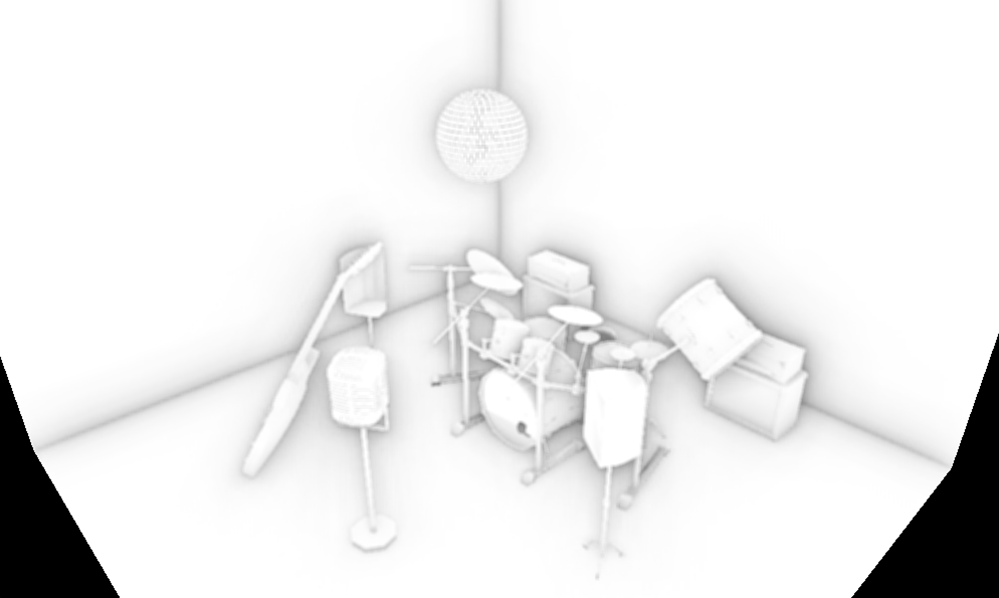
Here's a video of the scene. To show the SSAO more clearly, I squared the ambient occlusion.
Sources of textures and models:
Disco ball: https://www.turbosquid.com/3d-models/disco-ball-1408606
In G-Buffer pass, I draw all models, store their world space position, world space normal, albedo, roughness and metalness in color attachments. For lambertian material, I simply give a default roughness and metalness. The code for G-Buffer pass shader is in src/shaders/gbuffer.shader.frag and src/shaders/gbuffer.shader.vert. All color attachments have the same width and height as the screen. When the screen is resized, I also recreate the color attachments and update the descriptorSets that reference those attachements.
When draw frames, I first do the G-Buffer pass to acquire all information required for screen space rendering. Then I use the G-Buffer data to compute SSAO and lighting. In the final lighting pass, instead of getting position and normal from model vertices, it directly sample the position and normal maps and other G-Buffer maps to compute lighting.
To demonstrate the G-Buffer, I use a scene with a pbr sphere and a lambertian plane.
Here's the position.
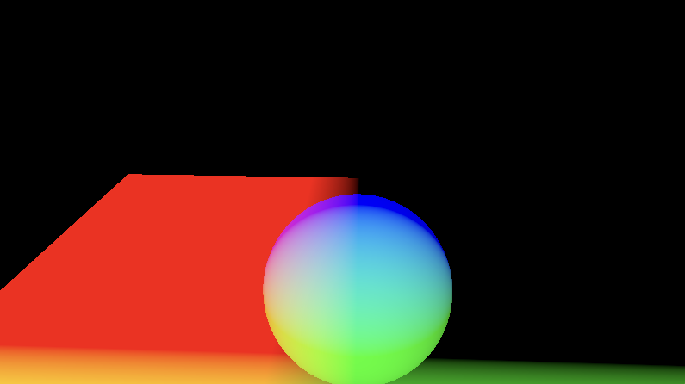
Here's the normal.
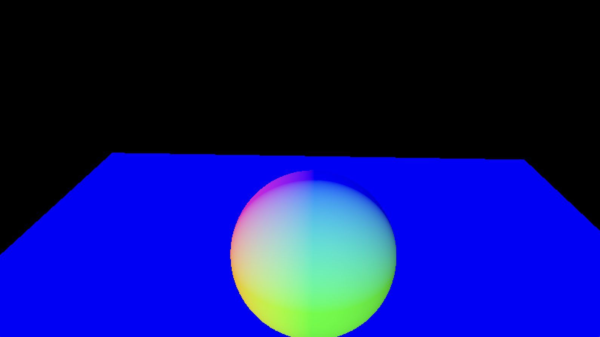
Here's the albedo.
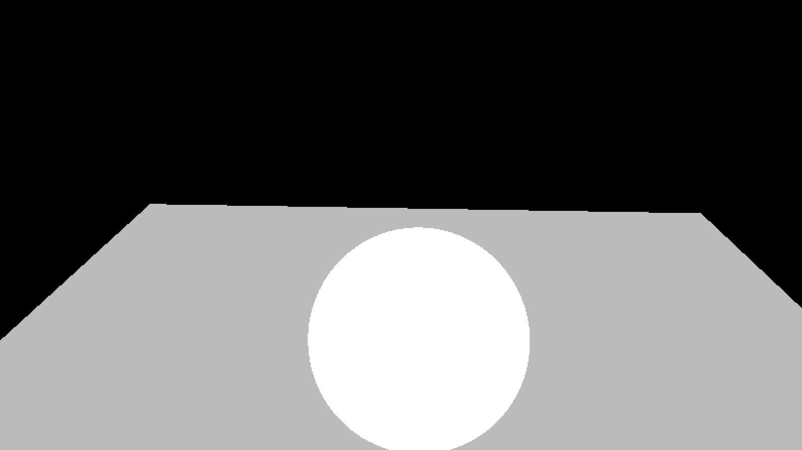
Here's the roughness.
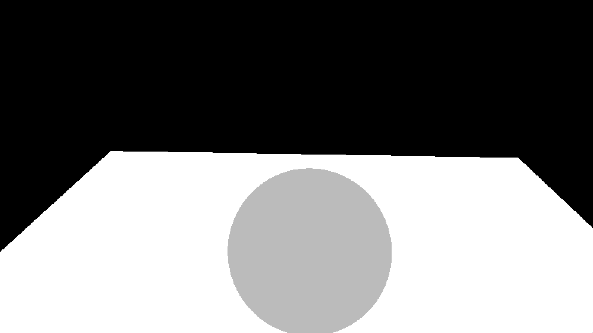
Here's the metalness.
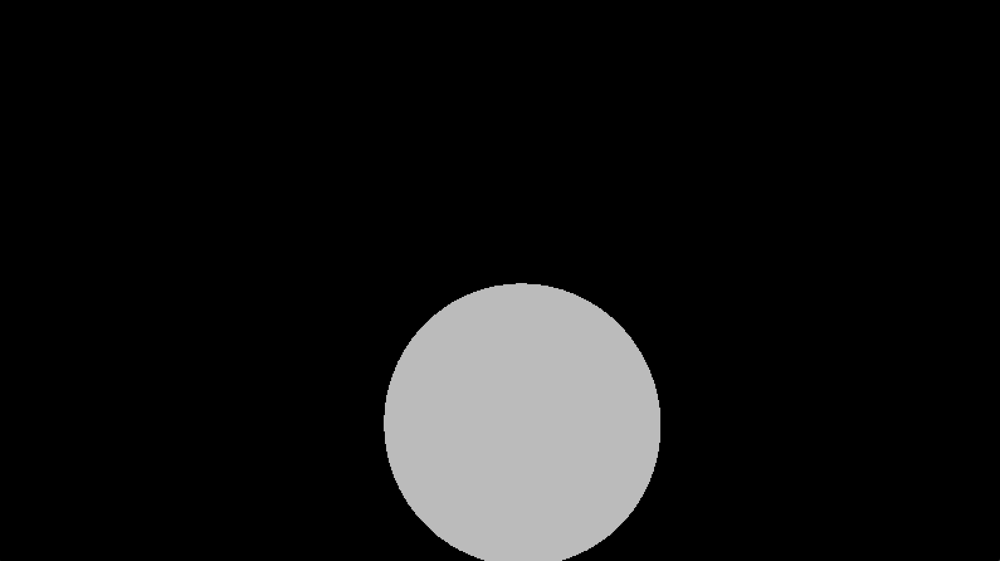
SSAO
I implement a normal-oriented hemisphere version of SSAO based on LearnOpenGL's tutorial (https://learnopengl.com/Advanced-Lighting/SSAO).
The code for SSAO shader are in src/shaders/ssao.shader.vert and src/shaders/ssao.shader.frag.
The SSAO pass takes a UniformBufferObject that contains a list of random sample positions in a normal-oriented hemisphere, a SSAO noise texture and the position map and normal map generated from the G-Buffer pass.
The list of samples generated using C++'s random library. They are all within a hemisphere oriented around a normal of positive z direction. I multiply them by a scale to distribute more samples closer to the origin.
The SSAO noise texture consists of 4x4 random rotation vectors that oriented around the tangent-space surface normal. They are saved as a texture and tiled over the screen such that I can randomly rotate the samples at any place over the screen.
Since my position and normal map are in world space, I first convert the sampled position and normal to view space by multiplying with the view matrix. Then I sample a noise vector and create a TBN matrix that rotate the sample and convert it from tangent space to view space. Then I obtain the stored depth value of the sample position and compare it to the current depth to determine if there is occlusion. I als apply a range check to make sure that only depth value within a radius around the fragment can contribute to the occlusion. I store the ambient occlusion in a color attachment of format VK_FORMAT_R8_UNORM.
I also pass the result of ambient occlusion through a blur pass to smooth it. The blur shader is defined in src/shaders/ssao.blur.shader.frag and src/shaders/ssao.blur.shader.vert. It simply use a 4x4 filter, the same size as the noise text to get an average of the occlusion at each texel.
Finally, I pass the blurred ssao image to the final lighting pass which is the previous pbr shader. It then sample the ssao and multiply the environment lighting by the ambient occlusion factor.
Here's a scene with a pbr sphere and 3 lambertian planes rendered with SSAO.
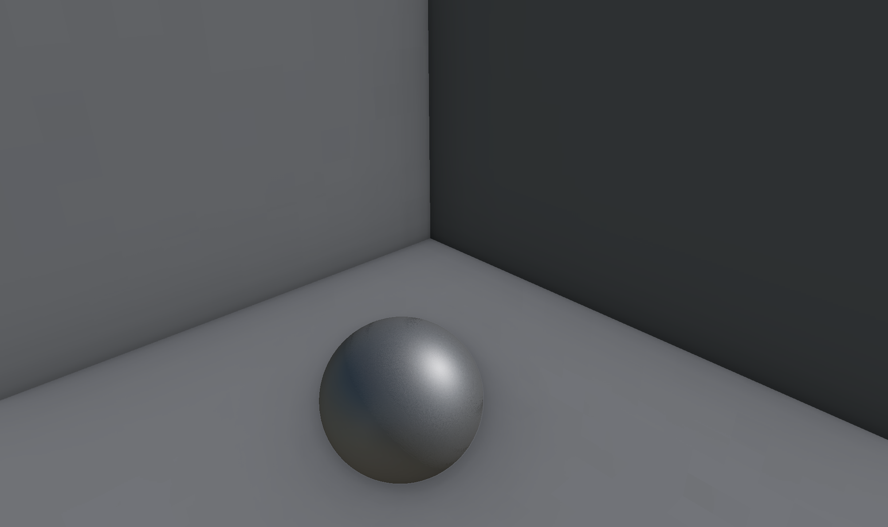
Here's the same scene without SSAO.
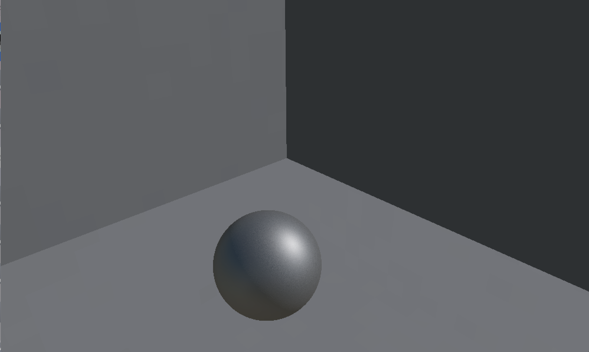
Here's a scene with only SSAO.
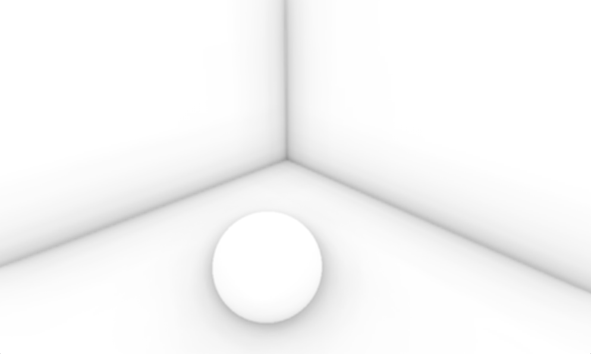
Performance Analysis A3-shadows
I compare the quality and rendering time for SSAO with different number of samples in the same scene as above.
Here's the ssao with 64 samples.
Here's the ssao with 32 samples.
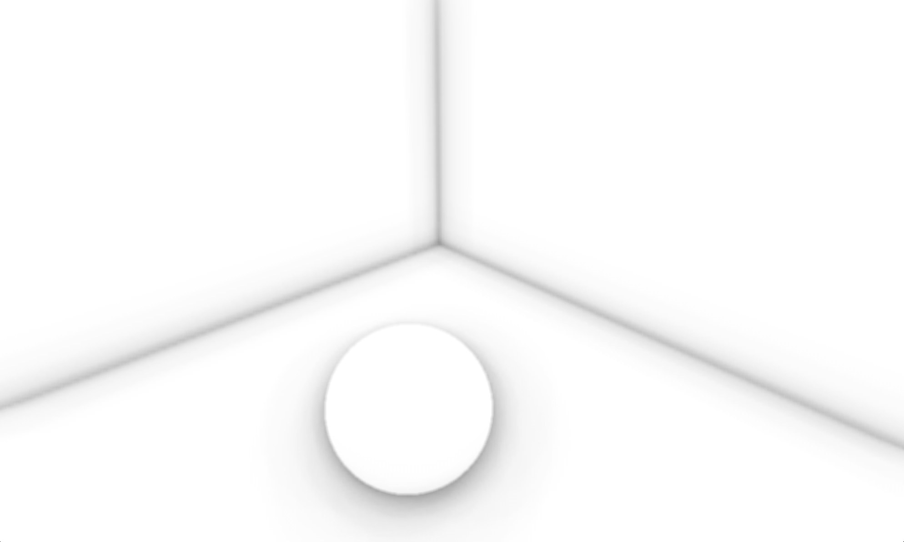
Here's the ssao with 16 samples.
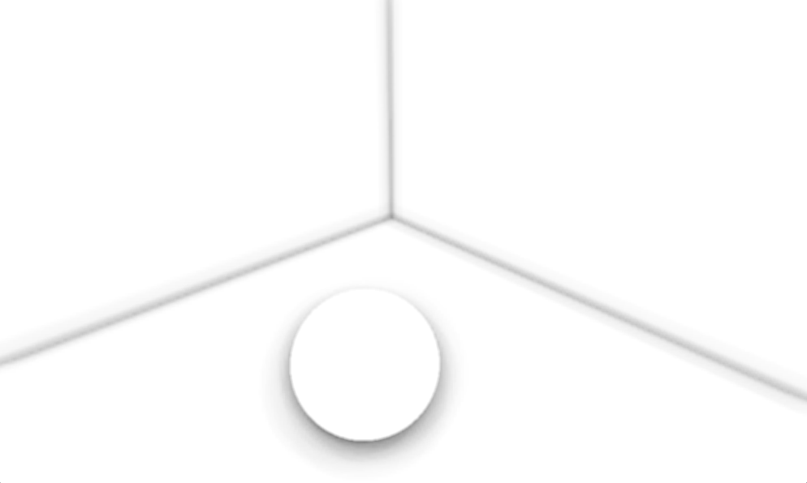
Here's the ssao with 8 samples.
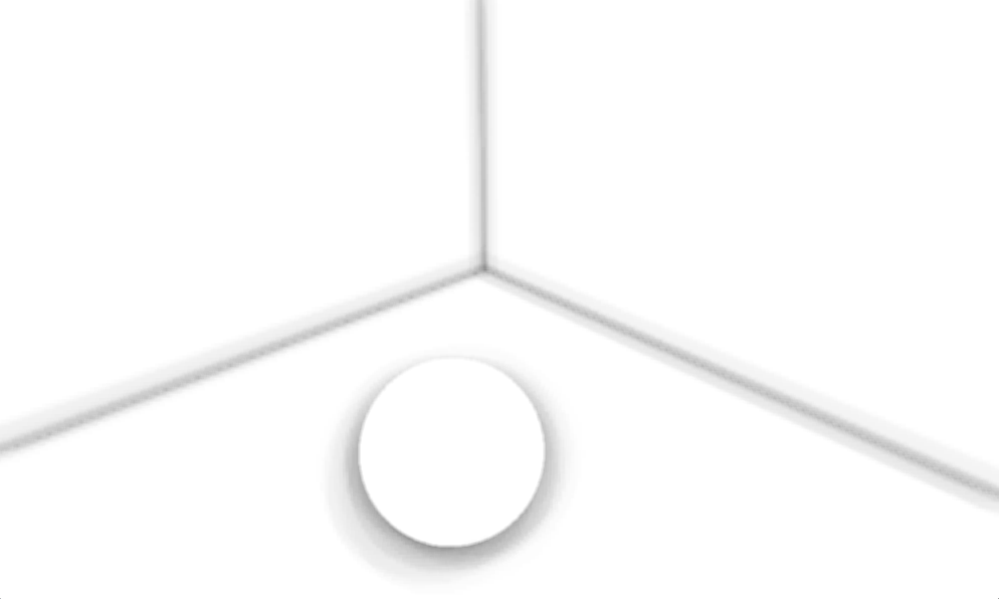
I observe that as number of samples decrease, the quality of the ambient occlusion deteriorate with the edge become fuzzier.
I then render the scene in headless mode for 120 frames and run for 100 iterations.
Here's the plot of the total rendering time with 8, 16, 32, 64 SSAO samples. The total rendering time increase as the number of SSAO samples increase.
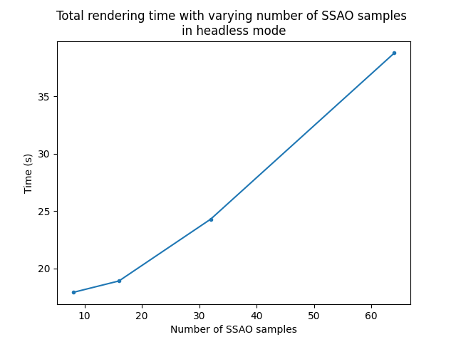
Feedback
Unfortunately, I spent too much time on debugging SSAO and do not have enough time to work on SSDO. I still learned a lot from this project. It is an wonderful experience.